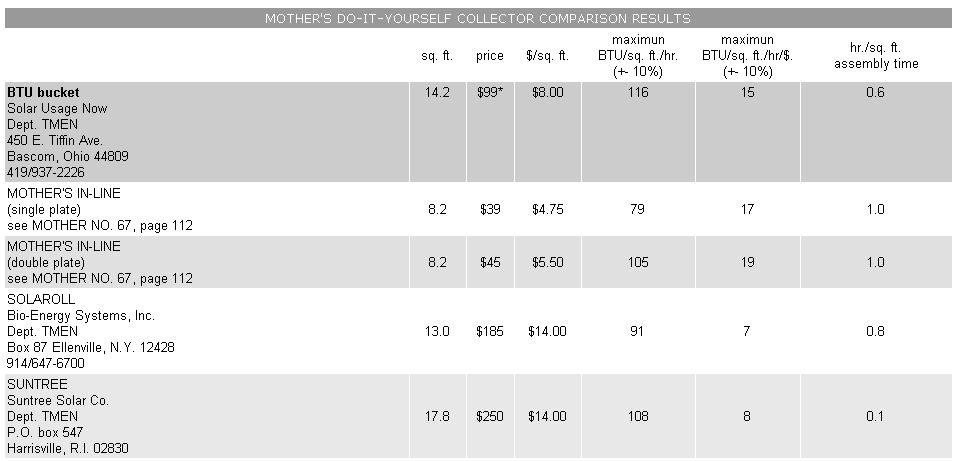

Mother's Do It Yourself Solar Water Heating Project
We compared the performance of Mother's DIY solar water heater to commercial products. Here are the results!
By Mother Earth News Editors
September/October 1981
Now fully assembled, our group of competing collectors finally have their day(s) in the sun to prove how well they work for solar water heating.
SOLAR WATER HEATING COMPARISON: PART II
In our last issue we introduced-for the purposes of comparison - three solar collector kits and a homemade unit designed and built by MOTHER's research staff. That initial article described the basic procedures involved (and the minor difficulties we ran into) in assembling the four water heaters. We also promised to finish the story with a side-by-side performance comparison of the units. By contrasting the relative efficiencies found during testing with the cost of the panels (and taking the ease and quality of construction into consideration, as well), we hoped to be able to pick a "best bet" for the handy -person interested in putting together his or her own solar water-heating setup.
Well, after over a week spent in the sun running the collectors on a test stand (and many more days compiling the data for the various units), we're finally ready to complete our report. But before we reveal the results, we'd like to tell you a bit more about just how we tested the collectors, so that you'll be better able to understand just what our figures do, and don't, mean.
DOES SCIENCE PROVIDE QUESTIONS OR ANSWERS?
First of all, you should know that an evaluation like ours can easily be misinterpreted. For one thing, we tested the panels on hot summer days ...and because there was less temperature difference between the collectors and the air around them than there would have been on a cold day-factors such as the emissivity of the absorber (the rate at which it expels the heat it has taken in), the insulation value of the box, and the air tightness didn't play roles as large as they would have in a cold climate in the dead of winter. The results from a test staged in a 0-degree-Fahrenheit outside temperature could have been quite different.
Another thing to keep in mind, when reviewing our results, is that they shouldn't be directly compared to those produced by a testing lab. We made no attempt to monitor the incoming solar radiation, so we can't provide conversion efficiencies for the devices we tested. Nor did we insulate the delivery or return lines or the storage tank. Thus the rate of temperature rise of our setup would not give a good indication of exactly how much hot water might be supplied by the collectors in an actual installation. We sought only to provide equal running conditions for all the panels being tested.
Our results reflect the average number of British Thermal Units (one BTU is the quantity of heat required to raise one pound of water 1 degree) produced per square foot of collector, per hour, over the course of the period extending from the beginning of the morning heating cycle until the collectors reached maximum heat level (usually about 140 degrees, by 1:00 p.m.).
Finally, as is the case with any test, our numbers are only as accurate as were the monitoring equipment and methods used. By calibrating our Heliotrope General SAS-3 thermistors before and after the evaluation (and disqualifying any of the "thermometers" that had more than 3 percent inherent variation from the mean), taking flow measurements every half-hour with a graduated cylinder and stopwatch, and using a quality digital ohmmeter to measure thermistor resistance, we feel that we have achieved an overall accuracy of plus or minus 10 percent That means that the numbers we provide could be off by 10 percent, in either direction, from the correct figure.
FIRST, A CHANGE IN THE WATER HEATING TEST
During the evaluation, the already assembled commercial collector (which we had hoped would provide a control to which we could compare the kits and homebuilt units) performed quite poorly. We opened it up in an effort to locate the problem, and discovered that the panel obtained from a local retail outlet-was not what it had been billed to be. It wasn't manufactured by American Solar King, didn't have a black chrome absorber ...and, in fact, had no identification on it at all. Although the unit was less than a year old, paint was already peeling from the copper plates. Such a device obviously wouldn't give an adequate reference for comparison purposes, so we've entirely eliminated it from the final results. (To be sure you get what you're after when shopping for a collector yourself, look for an identification badge pop-riveted to the frame before making a purchase ...there do seem to be some poorly made "counterfeits" on the market.)
SOLAR ENERGY
When our projected test accuracy of plus/minus 10 percent is taken into consideration, the BTU Bucket, the Suntree, and MOTHER's double-plate homemade in-line collectors don't have significantly different outputs. Again, our evaluation's potential error indicates that the SolaRoll panel yielded roughly 8 percent fewer BTU than did the average of the three top-rated units. MOTHER's single-plate in-line lagged 20 percent behind that same average.
However, these optimum performance figures weren't attained at the same flow rate. While the BTU Bucket, the Suntree, and the SolaRoll all performed best at one gallon per minute, both in-line collectors - partly because of their smaller surface areas-captured the most solar energy at a flow rate of 1/4 gallon per minute. (This point demonstrates that maintaining the optimum flow rate, for any collector, is essential if you're to get the best efficiency possible out of the heater.)
DOLLARS PER BTU
Naturally, the real efficiency that most folks are concerned with, when considering the purchase of a do-it-yourself solar collector, is economy. And as you can see from the accompanying chart, an individual willing to spend some time soldering together his or her own collector will find that both the doubleplate and singleplate in-lines offer good returns: around 19 and 17 BTU per square foot, per hour, per dollar invested in materials. (EDITOR'S NOTE: The in-lines' economy ratings are figured from $5.50 and $4.75 per square foot, respectively (1981 prices), to account for the use of copper sheet not employed in our original homemades.)
The runner-up in the economy race is the BTU Bucket, with a yield of about 15 BTU/square foot/hour/dollar. Among the other contenders, the figures are somewhat lower, with 8 BTU/square foot/hour/ dollar for the Suntree and 7 BTU/square foot/hour/dollar for the SolaRoll.
IN THE LONG RUN
Of course, there's at least one big unknown left, and that's the longevity of the different collectors. There's simply no way for us to accurately assess just how long the panels might last-or how much they might deteriorate in performance during their life spans-but it's probably safe to assume, for example, that our in-lines will require more frequent glazing changes than the others, since the corrugated fiberglass isn't shielded from ultraviolet light degradation.
Still, the facts indicate that a handy person's ability to do some or all of the work needed to build and install a solar water heating system is the one ingredient that will go the farthest toward making the energy-saving system an economical one ... and, with winter coming on, it might just be time to get started!
CORRECTIONS AND AMPLIFICATIONS
Since we published the first installment of our solar collector comparison, we've heard from Michael F. Zinn, president of BioEnergy Systems (the manufacturer of SolaRoll) ...who pointed out that polystyrene insulation should never be used in a solar device, since the material melts at approximately 200°F. Below that temperature, the foam may release gases that can degrade a collector's glazing. (Bio-Energy specifies only polyisocyanurate foam insulation for its products.)
The company's director mentioned, too, that SolaRoll absorber mat is now approved by the Food and Drug Administration for potable water use ...but like most collector manufacturers, Bio-Energy recommends the use of antifreeze to prevent over pressurization of the tubes, which might be caused by freezing.
Finally, Mr . Zinn suggested that the availability of trained SolaRolf dealers might aid do-it-yourselfers in getting their solar heaters to work properly.
And, under separate cover, we received a "thumb saver" device, which is used to set SolaRoll absorber mat tubes into the collector's headers ...the tool works quite well, and makes the task of plumbing a Bio-Energy collector both easier and less painful.
We also need to update our description of MOTHER's in-line collectors. The devices that our research staff built from aluminum printing plates were not soldered. Instead, two such sheets were sandwiched around the collector's tubes and then stapled in place. However, we ended up using copper-equipped-in-line collectors for the test ...since the only available aluminum absorber units were permanently mounted in a seminar exhibit. Please note that the per-square-foot price for the in-line units has been adjusted accordingly.
* Price does not include insulation.
 LEFT : The candidates for our solar water heater comparison are mounted in place and ready for their days in the sun. Shown from left to right are the Suntree Solar, the SolaRoll, the BTU Bucket, the unknown /and subsequently eliminated/ commercial panel, MOTHER's singleplate in-line and MOTHER's double-plate in-line (both copper-equipped/. RIGHT: The water to ""feed"" the entire collector lineup was drawn from a 55gallon drum by five pumps, and then returned to the top of the reservoir through valves. |
 Results from Mother's comparison of solar water heaters (1981 prices and addresses). |
|